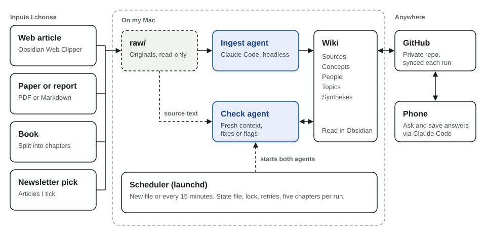

Research brain
A personal knowledge base that AI agents write, check and maintain. I choose what to read, and the system turns articles, papers and books into an interlinked wiki that I can query from my phone.
- Role
- Design and build
- Timeline
- October to November 2026
- Status
- In personal use
- Stack
- Claude Code (headless), Obsidian, Python, launchd, GitHub
- Problem
- What I read disappears. Clippings and highlights pile up, and months later I can neither find nor combine what a source said.
- Solution
- Every source I save becomes a source page and updates the pages for its concepts, people and topics. A second agent checks each page against the original.
- What it shows
- I can turn a published idea into a running system with guardrails that maintains itself, at no additional running cost.

The problem
I read a lot across AI, strategy and economics, and I keep very little of it in a usable form. Notes apps store documents; they do not connect what one source says with what another one said months earlier. Search over raw documents finds passages but forgets everything between two questions.
What I built
The system follows Andrej Karpathy's LLM Wiki pattern from April 2026: raw sources stay untouched, an AI agent compiles them into a wiki of plain Markdown pages, and a schema file defines the rules. Obsidian is where I read it.
I save an article with the Obsidian Web Clipper, drop a paper into a folder, or tick articles in a daily newsletter. Within minutes a background agent writes a source page with the key findings, figures and open questions, then updates or creates the pages for the concepts, people and topics involved, the index and a log. When a new source contradicts an existing page, the contradiction is recorded on that page with both sources.
Answers to my questions cite wiki pages and original sources. Good answers are filed back as synthesis pages, so the next question starts from a richer base.
Key decisions
-
It runs unattended on an existing subscription
macOS launchd starts the pipeline when a file arrives and every 15 minutes. Each source is processed by Claude Code in headless mode with a restricted tool set (read, write, edit, search), using my existing subscription instead of paid API calls. A state file, a process lock and three retries keep runs idempotent, and a notification tells me what was added.
-
Books are processed chapter by chapter
My first attempt ingested a 500-page book in one pass and produced a good overview with little depth. Now a book is split into chapter files with page markers. Each chapter gets its own note of 300 to 600 words with the argument, experiments and figures, each with a page reference. Concept pages link to the exact chapter and page. Five chapters run per cycle, so a full book is done unattended in a few hours.
-
A second agent checks every page
An unchecked AI wiki compounds its own errors, because new pages build on old ones. After each ingest, a separate agent with a fresh context compares the new and changed pages against the source text: figures, quotes, page references, who said what, and links. It fixes clear errors and flags what it cannot resolve. Interpretation stays out of scope, and anything the agent adds from its own knowledge must be labelled as such.
-
Rules keep the wiki clean
Originals are read-only. Every source page needs a link, ISBN or publisher reference. Tags come from a controlled vocabulary with a definition per tag, at most five per page. Newsletter articles I did not tick count as "seen" and are never used as evidence in answers.
-
The phone works through GitHub
After each run the vault syncs to a private GitHub repository. From my phone I open a Claude Code session on that repository, ask questions and save answers or new sources. The Mac picks up those changes on its next run and processes new sources there, so ingest and checks always happen in one place.
Where it stands
- In personal use since late October 2026, with articles, essays and a first book of about 500 pages that became 42 chapter notes.
- About one minute per chapter for the ingest, plus the check. No additional running cost.
- Limits: it only runs while the Mac is awake. Navigation through an index works well for hundreds of pages; beyond that it needs a search layer. Book texts stay in the private repository.
Next: move the pipeline to an always-on machine and add a search layer once the wiki outgrows its index.
What I learned
Building the pipeline was fast. Trust was the hard part. I first designed a manual review step, then admitted I would never go through dozens of pages by hand. So the check had to be part of the system: a second agent with a fresh context that only verifies what can be verified against the source.
Granularity decides depth. The same model that wrote a shallow summary of a whole book wrote precise notes with page references once each call covered a single chapter.